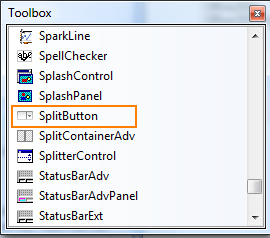

The following are steps to add the SplitButton control to an Application through Visual Studio:
1. Create a new Windows Form application in Visual Studio.
2. Drag SplitButton from the Toolbox tab to the designer.

Figure 1487: ToolBox
3. SplitButton control is added.
4. Now customize the properties of SplitButton in the Properties Window.